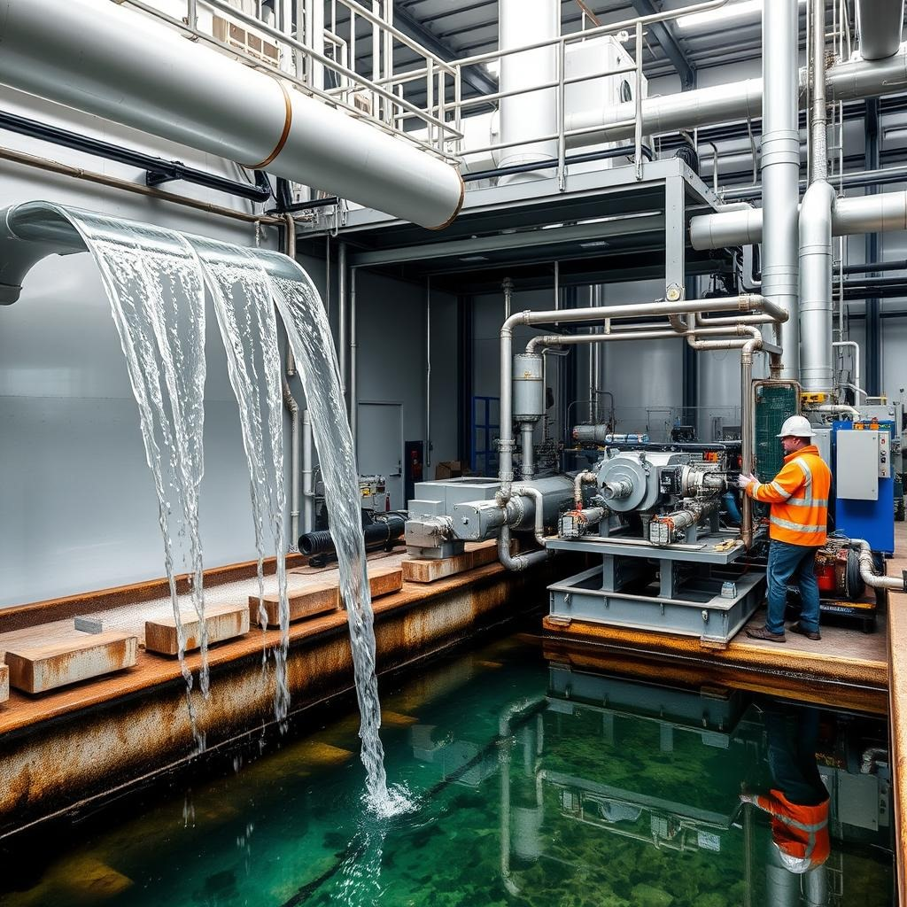

Water Conservation Articles
Water in Industry
Water plays a crucial role in industrial processes and is a vital resource for manufacturing, production, and various other industrial activities.
Here's an overview of its importance and use in industries:
Importance of Water in Industry
Processing and Manufacturing:
Used as a raw material in chemical, food, beverage, and pharmaceutical industries.
Integral in producing products like paper, textiles, and steel.
Cooling and Heating:
Cooling water systems are essential in power plants, refineries, and manufacturing facilities.
Used in boilers to generate steam for power generation and other processes.
Cleaning and Sanitation:
Ensures hygiene in industries such as food processing and healthcare.
Cleans equipment and machinery to maintain operational efficiency.
Transportation and Mixing:
Acts as a medium for transporting chemicals and other materials in pipelines.
Used to dissolve or dilute substances in manufacturing processes.
Energy Production:
Key to hydropower generation.
Plays a significant role in thermal and nuclear power plants.
Challenges of Water Use in Industry
Scarcity and Competition:
Limited water availability can lead to competition between industrial and other sectors.
Water Quality Requirements:
Industries often require specific water quality, necessitating purification and treatment.
Wastewater Management:
Industrial processes generate wastewater containing pollutants that need treatment before discharge.
Sustainability Pressures:
Increasing focus on minimizing water usage and reducing the environmental impact of water withdrawal.
Solutions for Sustainable Water Management in Industry
Recycling and Reuse:
Implementing water recycling systems to reduce freshwater dependency.
Efficient Technology:
Adopting advanced cooling systems, low-water cleaning technologies, and energy-efficient boilers.
Wastewater Treatment:
Setting up treatment plants to recycle wastewater for industrial or agricultural use.
Rainwater Harvesting:
Capturing rainwater to supplement industrial water requirements.
Policy Compliance and Monitoring:
Adhering to water usage regulations and employing sensors to monitor consumption.
Examples of Water-Intensive Industries
>Energy Production:
Power plants for steam generation and cooling. Food and Beverage: High water demand for processing and cleaning.
Chemical Industry:
Utilizes water for reactions, dilutions, and cooling.
Mining and Metal Industries:
Requires water for ore processing and dust suppression.
Role of Innovation
Smart water systems, IoT, and AI are being deployed to monitor and optimize water usage.
Research into alternative cooling methods and zero-liquid discharge systems is gaining traction